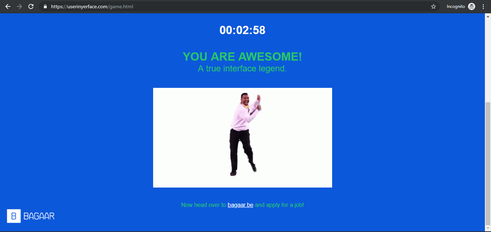

Posted on: July 1, 2019
I can say that I was satisfied on my first week on USERDES class because from the beginning I am really interested in this subject, I love designing things although before this class, I don’t have someone to guide me in designing, that’s why I appreciate our professor because she keeps our class interactive while at the same time we also learn new things. I think I really was able to provide a creative idea on our elevator activity, because I never thought I would be designing those kinds of things which made me more interested in designing. Before this class, my understanding of ‘designing’ is limited to how it will be attracting to look at, it never crossed my mind that designing include the ‘how will it work’ part. The ambience on this class is very soothing. Having a professor who I can say that we can vibe with while providing us with knowledge is very fun to have. I am looking forward to having a lots of fun while learning.
Posted on: July 12, 2019
The class atmosphere this week is even lighter compared to last week, I’ve learned more things about this subject. Thinking of an application might sound easy but considering every aspect such as problems, possible solution, how will it be implemented, designs, are exhausting. We also had a chance to think thoroughly, considering everything that can affect our desired project.
Posted on: July 28, 2019
This week’s task to create a Web application was kind of hard for me since the last time I programmed using HTML was years ago so I had a hard time doing a website that suits my preferences, so I had to check some tutorials on the internet to do a certain thing on my web app.
Posted on: July 28, 2019
The screenshot below is my score on UserInyerface Quiz. It is a Patience consuming task about UI Design but it is still informative at the same time

First thing is that this practice is basically an experience when dealing with an incorrect way of doing a website which really helped me be aware of the things I should avoid when doing a website.
Posted on: August 23, 2019
The photo below is taken during the Seminar about Microsoft Azure
This year’s SOCIT Fest is good for me because it was able to expose me in different platforms that can be used in my subjects.
Azure works like Heroku although it seems more complicated to use compared to Heroku so I think I’m still going to use Heroku. Although the speaker might be the reason of the event’s success and I might not be able to contribute something, but at least I was able to learn something through this seminar which is the speaker’s main objective in doing the seminar. I think that this event can be improved into an interactive type of seminar instead of the speaker just talking, I think that there should be a part in which we are able access a premade site which is created through that platform. My expectations for next year’s SOCIT Fest is just for it to be more an interactive type of event.Posted on: August 26, 2019
First Half of USERDES class were able to impart knowledge regarding about this subject, there’s a lot of things I’ve learned that I wish I should’ve learned earlier through my college years. So far, the activities done are fun and is really a source for learning. The challenges I’ve encountered was being undecisive on my work, especially on the Lab 1 and Lab 2 part, because I kept changing my design due to new ideas, but I think it was a good thing because that’s the activity’s point was about. My expectations for the finals are the same for all the subjects, I think it will be hard, and time consuming. The class for me is already good and there’s nothing left to improve.